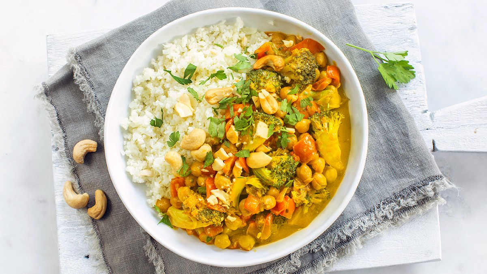

Broccoli Curry

Terug naar homepage
Benodigde ingredienten:
Broccoli
Currypasta
Rijst
Bereidingswijze:
Begin met koken.
Voeg ingredienten toe.
Serveer gerecht.
Over de auteur
Dit gerecht ingezonden door "gebruiker1234"